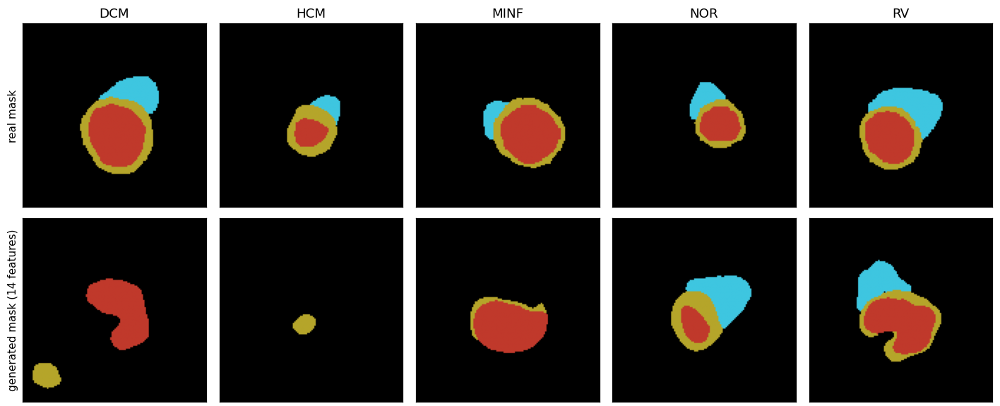

Models: Mask model (step 1) · Flow model (step 2) · SPADE GAN (baseline)
What it does
A mask is a map of the heart: every pixel is background, right ventricle (RV), myocardium (the heart muscle) or left ventricle (LV). Given a clinical profile, the model draws such a map. A different noise draw gives a different heart for the same profile.
Input data
- Real data: the 85 training patients of ACDC, one mask for end-diastole (ED) and one for end-systole (ES) per patient, cropped to 128 × 128 pixels at 1.5 mm.
- Condition: the 14 features calculated from those masks (see The 14 features), plus the relative slice position and an ED/ES flag. The features are standardised with the training patients only.
- Split: 85 training and 15 validation patients, split by patient. The original test sets are not used.
How it was trained
- During training an encoder sees the real mask and the condition and compresses it to 16 numbers. The decoder learns to rebuild the real mask from those 16 numbers and the condition.
- The loss has two parts: a per-pixel classification loss (with extra weight on the LV, which was missing in many early masks) and a term that keeps the 16 numbers close to a normal distribution, so that random noise can be used later.
- Small noise is added to the features during training, so the model cannot memorise each patient.
- The LV weight (2, 5 or 10) was chosen on the validation patients by a rule fixed in advance. About 60 epochs on a free GPU.
Architecture
At generation time only the decoder is used: the 16 noise numbers and the 16 condition numbers pass through a fully connected layer to an 8 × 8 map, then four up-sampling blocks reach 128 × 128 with a score for each of the four labels. The most likely label is taken per pixel and only the largest region of each label is kept. The model has about 2.2 million parameters.

Visual results

- In the NOR and MINF columns the synthetic mask has a plausible LV and myocardium. The RV is rougher.
- In the DCM and HCM columns the synthetic mask fails: a detached fragment and no RV in DCM, and a small myocardium fragment only in HCM.
- Across the validation patients the generated sizes follow the requested profile much better than a shuffled profile does. The numbers are in Results.
Limits
- Some masks still fail completely, and the myocardium is often too thick.
- The ejection fraction of the generated heart is only weakly controlled: it is the difference of two volumes, so small errors add up.
- Trained on ACDC only. The check on M&Ms is still to do.